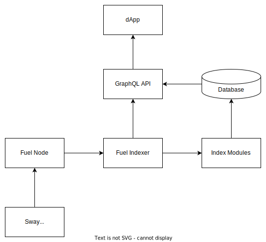

Fuel Indexer
The Fuel indexer is a standalone service that can be used to index various components of the blockchain. These indexable components include blocks, transactions, receipts, and state within a Fuel network, allowing for high-performance read-only access to the blockchain for advanced dApp use-cases.
By using a combination of Fuel-flavored GraphQL schema, a SQL backend, and indices written in Rust (that compile to WASM), users of the Fuel indexer can get started creating production-ready backends for their dApps, meant to go fast 🚗💨.
Feel free to check out Quickstart for those wanting to build dApp backends right away. And for those willing to contribute to the Fuel indexer project, please feel free to read our contributor guidelines.
Quickstart
In this tutorial you will:
- Bootstrap your development environment.
- Create, build, and deploy an index to an indexer service hooked up to Fuel's
beta-2testnet. - Query the indexer service for indexed data using GraphQL.
IMPORTANT: Docker is a prerequisite for using this Quickstart. If Docker is not installed on your machine, please review the Docker installation instructions here.
1. Setting up your environment
In this Quickstart, we'll use Docker's Compose to spin up a Fuel indexer service with a Postgres database backend. We will also use Fuel's toolchain manager fuelup in order to install the forc-index binary that we'll use to develop our index.
1.1 Install fuelup
To Install fuelup with the default features/options, use the following command, which downloads the fuelup installation script and runs it interactively.
curl \
--proto '=https' \
--tlsv1.2 -sSf https://fuellabs.github.io/fuelup/fuelup-init.sh | sh
If you require a non-default
fuelupinstallation, please read thefuelupinstallation docs.
1.2 Pull Docker images
We will use the latest Postgres and Fuel indexer images.
docker pull postgres:latest
docker pull ghcr.io/fuellabs/fuel-indexer:latest
2. Using the forc-index plugin
- The primary means of interfacing with the Fuel indexer for index development is the
forc-indexCLI tool. forc-indexis aforcplugin specifically created to interface with the Fuel indexer service.- Since we already installed
fuelupin a previous step [1.1], we should be able to check that ourforc-indexbinary was successfully installed and added to ourPATH.
which forc index
/Users/me/.fuelup/bin/forc-index
IMPORTANT:
fuelupwill install several binaries from the Fuel ecosystem and add them into yourPATH, including thefuel-indexerbinary. Thefuel-indexerbinary is the primary binary that users can use to spin up a Fuel indexer service.
which fuel-indexer
/Users/me/.fuelup/bin/fuel-indexer
2.1 Check for components
Once the forc-index plugin is installed, let's go ahead and see what indexer components we have installed.
Many of these components are required for development work (e.g.,
fuel-core,psql) but some are even required for non-development usage as well (e.g.,wasm-snip,fuelup).
forc index check
+--------+------------------------+------------------------------------------------------------------+
| Status | Component | Details |
+--------+------------------------+------------------------------------------------------------------+
| ✅ | fuel-indexer binary | /Users/rashad/.fuelup/bin/fuel-indexer |
+--------+------------------------+------------------------------------------------------------------+
| ⛔️ | fuel-indexer service | Failed to detect service at Port(29987). |
+--------+------------------------+------------------------------------------------------------------+
| ✅ | psql | /usr/local/bin/psql |
+--------+------------------------+------------------------------------------------------------------+
| ✅ | sqlite | /usr/bin/sqlite3 |
+--------+------------------------+------------------------------------------------------------------+
| ✅ | fuel-core | /Users/rashad/.fuelup/bin/fuel-core |
+--------+------------------------+------------------------------------------------------------------+
| ✅ | docker | /usr/local/bin/docker |
+--------+------------------------+------------------------------------------------------------------+
| ✅ | fuelup | /Users/rashad/.fuelup/bin/fuelup |
+--------+------------------------+------------------------------------------------------------------+
| ✅ | wasm-snip | /Users/rashad/.cargo/bin/wasm-snip |
+--------+------------------------+------------------------------------------------------------------+
2.2 Creating a new index
Now that we have our development environment set up, the next step is to create an index.
forc index new hello-index --namespace my_project && cd hello-index
The
namespaceof your project is a required option. You can think of anamespaceas your organization name or company name. Your index project might contain one or many indices all under the samenamespace.
forc index new hello-index --namespace my_project
███████╗██╗ ██╗███████╗██╗ ██╗███╗ ██╗██████╗ ███████╗██╗ ██╗███████╗██████╗
██╔════╝██║ ██║██╔════╝██║ ██║████╗ ██║██╔══██╗██╔════╝╚██╗██╔╝██╔════╝██╔══██╗
█████╗ ██║ ██║█████╗ ██║ ██║██╔██╗ ██║██║ ██║█████╗ ╚███╔╝ █████╗ ██████╔╝
██╔══╝ ██║ ██║██╔══╝ ██║ ██║██║╚██╗██║██║ ██║██╔══╝ ██╔██╗ ██╔══╝ ██╔══██╗
██║ ╚██████╔╝███████╗███████╗ ██║██║ ╚████║██████╔╝███████╗██╔╝ ██╗███████╗██║ ██║
╚═╝ ╚═════╝ ╚══════╝╚══════╝ ╚═╝╚═╝ ╚═══╝╚═════╝ ╚══════╝╚═╝ ╚═╝╚══════╝╚═╝ ╚═╝
An easy-to-use, flexible indexing service built to go fast. 🚗💨
----
Read the Docs:
- Fuel Indexer: https://github.com/FuelLabs/fuel-indexer
- Fuel Indexer Book: https://fuellabs.github.io/fuel-indexer/latest
- Sway Book: https://fuellabs.github.io/sway/latest
- Rust SDK Book: https://fuellabs.github.io/fuels-rs/latest
Join the Community:
- Follow us @SwayLang: https://twitter.com/fuellabs_
- Ask questions in dev-chat on Discord: https://discord.com/invite/xfpK4Pe
Report Bugs:
- Fuel Indexer Issues: https://github.com/FuelLabs/fuel-indexer/issues/new
Take a quick tour.
`forc index check`
List indexer components.
`forc index new`
Create a new index.
`forc index init`
Create a new index in an existing directory.
`forc index start`
Start a local indexer service.
`forc index build`
Build your index.
`forc index deploy`
Deploy your index.
`forc index remove`
Stop a running index.
IMPORTANT: If you want more details on how this index works, checkout our block explorer index example.
2.3 Deploying our index
By now we have a brand new index that will index some blocks and transactions, but now we need to build and deploy it in order to see it in action.
2.3.1 Starting an indexer service
- To start an indexer service, we'll be spinning up Postgres and Fuel indexer containers via
docker compose. Our indexer service will connect to Fuel'sbeta-2network so that we can index blocks and transactions from an actual Fuel node. We'll use thedocker composefile below, and spinning everything up withdocker compose up.
IMPORTANT: Ensure that any local Postgres instance that is running on port
5432is stopped.You can open up a
docker-compose.yamlfile in the same directory as your index manifest, and paste the YAML content below to thisdocker-compose.yamlfile.
version: "3.9"
services:
postgres:
image: postgres:latest
ports:
- "5432:5432"
volumes:
- .:/usr/local/postgres
environment:
- POSTGRES_PASSWORD=postgres
- PGUSER=postgres
healthcheck:
test: ["CMD-SHELL", "pg_isready", "-U", "postgres", "-d", "postgres"]
interval: 30s
timeout: 60s
retries: 5
start_period: 80s
fuel-indexer:
image: ghcr.io/fuellabs/fuel-indexer:v0.2.0
command: bash -c "sleep 2 && ./fuel-indexer --fuel-node-host node-beta-2.fuel.network --fuel-node-port 80 --postgres-host postgres --postgres-password postgres --graphql-api-host 0.0.0.0"
ports:
- "29987:29987"
volumes:
- .:/usr/local/fuel-indexer
depends_on:
- postgres
2.3.2 Deploying your index to your Fuel indexer service
With our database and Fuel indexer indexer containers up and running, we'll deploy the index that we previously created. If all goes well, you should see the following:
forc-index deploy --manifest hello_index.manifest.yaml --url http://0.0.0.0:29987
forc index deploy --manifest hello_index.manifest.yaml --url http://0.0.0.0:29987
▹▹▸▹▹ ⏰ Building... Finished dev [unoptimized + debuginfo] target(s) in 0.87s
▪▪▪▪▪ ✅ Build succeeded.
Deploying index at hello_index.manifest.yaml to http://127.0.0.1:29987/api/index/my_project/hello_index
▹▸▹▹▹ 🚀 Deploying...
{
"assets": [
{
"digest": "79e74d6a7b68a35aeb9aa2dd7f6083dae5fdba5b6a2f199529b6c49624d1e27b",
"id": 1,
"index_id": 1,
"version": 1
},
{
"digest": "4415628d9ea79b3c3f1e6f02b1af3416c4d0b261b75abe3cc81b77b7902549c5",
"id": 1,
"index_id": 1,
"version": 1
},
{
"digest": "e901eba95ce8b4d1c159c5d66f24276dc911e87dbff55fb2c10d8b371528eacc",
"id": 1,
"index_id": 1,
"version": 1
}
],
"success": "true"
}
▪▪▪▪▪ ✅ Successfully deployed index.
3. Querying for data
With our index deployed, after a few seconds, we should be able to query for newly indexed data.
Below, we write a simple GraphQL query that simply returns a few fields from all transactions that we've indexed.
curl -X POST http://0.0.0.0:29987/api/graph/my_project \
-H 'content-type: application/json' \
-d '{"query": "query { tx { id hash status block }}", "params": "b"}' \
| json_pp
% Total % Received % Xferd Average Speed Time Time Time Current
Dload Upload Total Spent Left Speed
100 364 100 287 100 77 6153 1650 --:--:-- --:--:-- --:--:-- 9100
[
{
"block" : 7017844286925529648,
"hash" : "fb93ce9519866676813584eca79afe2d98466b3e2c8b787503b76b0b4718a565",
"id" : 7292230935510476086,
},
{
"block" : 3473793069188998756,
"hash" : "5ea2577727aaadc331d5ae1ffcbc11ec4c2ba503410f8edfb22fc0a72a1d01eb",
"id" : 4136050720295695667,
},
{
"block" : 7221293542007912803,
"hash" : "d2f638c26a313c681d75db2edfbc8081dbf5ecced87a41ec4199d221251b0578",
"id" : 4049687577184449589,
},
]
Finished! 🥳
Congrats, you just created, built, and deployed your first index on the world's fastest execution layer. For more detailed info on how the Fuel indexer service works, make sure you read the book.
Getting Started
This section provides an outline regarding how to get started using the Fuel indexer service, including dependency installation, basic usage, and examples.
- Installing Rust
- System dependencies
- Application dependencies
- Indexer Configuration
- Project Structure
After you've installed all required dependencies. Feel free to checkout a few examples.
Architecture

The Fuel indexer is meant to run alongside a Fuel node and a database. Generally, the typical flow of information through the indexer is as follows:
- A Sway smart contract emits receipts during its execution on the Fuel node.
- Blocks, transactions, and receipts from the node are monitored by the Fuel indexer service and checked for specific user-defined event types.
- When a specific event type is found, the indexer executes the corresponding handler from an index module.
- The handler processes the event and stores the index information in the database.
- A dApp queries for blockchain data by using the indexer's GraphQL API endpoint, which fetches the desired information from the corresponding index in the database and returns it to the user.
Installing Rust
The easiest way to get Cargo is to install the current stable release of Rust by using rustup. Installing Rust using rustup will also install cargo.
On Linux and macOS systems, this is done as follows:
curl https://sh.rustup.rs -sSf | sh
It will download a script, and start the installation. If everything goes well, you’ll see this appear:
Rust is installed now. Great!
On Windows, download and run rustup-init.exe. It will start the installation in a console and present the above message on success.
After this, you can use the rustup command to also install beta or nightly channels for Rust and Cargo.
For other installation options and information, visit the install page of the Rust website.
Build and Install Cargo from Source
Alternatively, you can build Cargo from source.
System Requirements
There are a few system requirements related to compilation, tooling, and SQL backends that you'll need to get started with a Fuel indexer.
Ubuntu/Debian
apt update && apt install -y \
cmake \
pkg-config \
git \
gcc \
build-essential \
clang \
libclang-dev \
llvm \
libpq-dev
| Dependency | Required For |
|---|---|
| cmake | Manages the build process in an operating system and in a compiler-independent manner |
| pkg-config | Language-agnostic helper tool used when compiling applications and libraries |
| git | Version control system |
| gcc | Compiler tools required to build various Fuel indexer crates |
| clang/libclang-dev | Compiler tools required to build various Fuel indexer crates on Unix-like OSes |
| llvm | Required for building Fuel indexer crate dependencies |
| libpq-dev | Set of library function helping facilitate interaction with the PostgreSQL backend |
MacOS
brew update && brew install \
cmake \
llvm \
libpq \
postgresql
| Dependency | Required For |
|---|---|
| cmake | Manages the build process in an operating system and in a compiler-independent manner |
| llvm | Compiler infrastructure for building Fuel indexer crate dependencies |
| libpq | Postgres C API library |
| postgresql | Installs the command line console (psql) as well as a PostgreSQL server locally |
Arch
pacman -Syu --needed --noconfirm \
cmake \
gcc \
pkgconf \
git \
clang \
llvm11 \
llvm11-libs \
postgresql-libs
| Dependency | Required For |
|---|---|
| cmake | Manages the build process in an operating system and in a compiler-independent manner |
| git | Version control system |
| gcc | Compiler tools required to build various Fuel indexer crates |
| llvm11 | Compiler infrastructure for building Fuel indexer crate dependencies |
| llvm11-libs | Compiler infrastructure libs for building Fuel indexer crate dependencies |
| pkgconf | System for configuring build dependency information |
| postgresql-libs | Provides the essential shared libraries for any PostgreSQL client program or interface |
| clang | Compiler required to build various Fuel indexer crates Unix-like OSes |
Application dependencies
Database
At this time, the Fuel indexer requires the use of a database. We currently support two database options: PostgreSQL and SQLite. PostgreSQL is a database solution with a complex feature set and requires a database server. SQLite is an embedded database solution with a simpler set of features and can be setup and moved to different systems.
PostgreSQL
Note: The following explanation is for demonstration purposes only. A production setup should use secure users, permissions, and passwords.
macOS
On macOS systems, you can install PostgreSQL through Homebrew. If it isn't present on your system, you can install it according to the instructions. Once installed, you can add PostgreSQL to your system by running brew install postgresql. You can then start the service through brew services start postgresql. You'll need to create a database for your index data, which you can do by running createdb [DATABASE_NAME]. You may also need to create the postgres role; you can do so by running createuser -s postgres.
Linux
For Linux-based systems, the installation process is similar. First, you should install PostgreSQL according to your distribution's instructions. Once installed, there should be a new postgres user account; you can switch to that account by running sudo -i -u postgres. After you have switched accounts, you may need to create a postgres database role by running createuser --interactive. You will be asked a few questions; the name of the role should be postgres and you should elect for the new role to be a superuser. Finally, you can create a database by running createdb [DATABASE_NAME].
In either case, your PostgreSQL database should now be accessible at postgres://postgres@127.0.0.1:5432/[DATABASE_NAME].
SQLite
macOS
On macOS systems, you can install SQLite through Homebrew. If it isn't present on your system, you can install it according to the instructions. Once installed, you can add SQLite to your system by running brew install sqlite. You can create a database by running sqlite3 [DATABASE_FILE_PATH].
Linux
For Linux-based systems, you should first install SQLite according to the instructions for your distribution. Once installed, you can create a database by running sqlite3 [DATABASE_FILE_PATH].
In either case, your SQLite database is now accessible at sqlite://[DATABASE_FILE_PATH].
fuelup
fuelup installs the Fuel toolchain from our official release channels, enabling you to easily keep the toolchain updated.
Currently, this script supports Linux/macOS systems only. For other systems, please read the Installation chapter.
Installation is simple: all you need is fuelup-init.sh, which downloads the core Fuel binaries needed to get you started on development.
curl --proto '=https' --tlsv1.2 -sSf https://fuellabs.github.io/fuelup/fuelup-init.sh | sh
This will automatically install forc, its accompanying plugins, fuel-core and other key components in ~/.fuelup/bin. Please read the Components chapter for more info on the components installed.
The script will ask for permission to add ~/.fuelup/bin to your PATH.
Otherwise, you can also pass --no-modify-path so that fuelup-init does not modify your PATH and will not ask for permission to do so:
curl --proto '=https' --tlsv1.2 -sSf https://fuellabs.github.io/fuelup/fuelup-init.sh | sh -s -- --no-modify-path
If you just want fuelup without automatically installing the latest toolchain, you can pass the --skip-toolchain-installation option:
curl --proto '=https' --tlsv1.2 -sSf https://fuellabs.github.io/fuelup/fuelup-init.sh | sh -s -- --skip-toolchain-installation
For more info on how to install and use fuelup, please read the fuelup docs.
sqlx
SQLx's associated command-line utility for managing databases, migrations, and enabling "offline"
mode with sqlx::query!() and friends.
Install
With Rust toolchain
# supports all databases supported by SQLx
$ cargo install sqlx-cli
# only for postgres
$ cargo install sqlx-cli --no-default-features --features native-tls,postgres
# use vendored OpenSSL (build from source)
$ cargo install sqlx-cli --features openssl-vendored
# use Rustls rather than OpenSSL (be sure to add the features for the databases you intend to use!)
$ cargo install sqlx-cli --no-default-features --features rustls
Usage
All commands require that a database url is provided. This can be done either with the --database-url command line option or by setting DATABASE_URL, either in the environment or in a .env file
in the current working directory.
For more details, run sqlx <command> --help.
# Postgres
DATABASE_URL=postgres://postgres@localhost/my_database
Create/drop the database at DATABASE_URL
sqlx database create
sqlx database drop
Create and run migrations
sqlx migrate add <name>
Creates a new file in migrations/<timestamp>-<name>.sql. Add your database schema changes to
this new file.
sqlx migrate run
Compares the migration history of the running database against the migrations/ folder and runs
any scripts that are still pending.
Users can provide the directory for the migration scripts to sqlx migrate subcommands with the --source flag.
sqlx migrate info --source ../relative/migrations
Reverting Migrations
If you would like to create reversible migrations with corresponding "up" and "down" scripts, you use the -r flag when creating new migrations:
$ sqlx migrate add -r <name>
Creating migrations/20211001154420_<name>.up.sql
Creating migrations/20211001154420_<name>.down.sql
After that, you can run these as above:
$ sqlx migrate run
Applied migrations/20211001154420 <name> (32.517835ms)
And reverts work as well:
$ sqlx migrate revert
Applied 20211001154420/revert <name>
Note: attempting to mix "simple" migrations with reversible migrations with result in an error.
$ sqlx migrate add <name1>
Creating migrations/20211001154420_<name>.sql
$ sqlx migrate add -r <name2>
error: cannot mix reversible migrations with simple migrations. All migrations should be reversible or simple migrations
Enable building in "offline mode" with query!()
There are 3 steps to building with "offline mode":
- Enable the SQLx's Cargo feature
offline- E.g. in your
Cargo.toml,sqlx = { features = [ "offline", ... ] }
- E.g. in your
- Save query metadata for offline usage
cargo sqlx prepare
- Build
Note: Saving query metadata must be run as cargo sqlx.
cargo sqlx prepare
Invoking prepare saves query metadata to sqlx-data.json in the current directory; check this file into version
control and an active database connection will no longer be needed to build your project.
Has no effect unless the offline Cargo feature of sqlx is enabled in your project. Omitting that
feature is the most likely cause if you get a sqlx-data.json file that looks like this:
{
"database": "PostgreSQL"
}
cargo sqlx prepare --check
Exits with a nonzero exit status if the data in sqlx-data.json is out of date with the current
database schema and queries in the project. Intended for use in Continuous Integration.
Force building in offline mode
The presence of a DATABASE_URL environment variable will take precedence over the presence of sqlx-data.json, meaning SQLx will default to building against a database if it can. To make sure an accidentally-present DATABASE_URL environment variable or .env file does not
result in cargo build (trying to) access the database, you can set the SQLX_OFFLINE environment
variable to true.
If you want to make this the default, just add it to your .env file. cargo sqlx prepare will
still do the right thing and connect to the database.
Include queries behind feature flags (such as queries inside of tests)
In order for sqlx to be able to find queries behind certain feature flags you need to turn them on by passing arguments to rustc.
This is how you would turn all targets and features on.
cargo sqlx prepare -- --all-targets --all-features
wasm-snip
Important: As of this writing, there is a small bug in newly built Fuel indexer WASM modules that produces a WASM runtime error due an errant upstream dependency. For now, a quick workaround requires using
wasm-snipto remove the errant symbols from the WASM module. More info can be found in the related script here.
About
wasm-snip replaces a WebAssembly function's body with an unreachable.
Maybe you know that some function will never be called at runtime, but the compiler can't prove that at compile time? Snip it! All the functions it transitively called — which weren't called by anything else and therefore could also never be called at runtime — will get removed too.
Very helpful when shrinking the size of WebAssembly binaries!
This functionality relies on the "name" section being present in the .wasm
file, so build with debug symbols:
[profile.release]
debug = true
Executable
To install the wasm-snip executable, run
cargo install wasm-snip
You can use wasm-snip to remove the annoying_space_waster
function from input.wasm and put the new binary in output.wasm like this:
wasm-snip input.wasm -o output.wasm annoying_space_waster
For information on using the wasm-snip executable, run
wasm-snip --help
And you'll get the most up-to-date help text, like:
Replace a wasm function with an `unreachable`.
USAGE:
wasm-snip [FLAGS] [OPTIONS] <input> [--] [function]...
FLAGS:
-h, --help Prints help information
--snip-rust-fmt-code Snip Rust's `std::fmt` and `core::fmt` code.
--snip-rust-panicking-code Snip Rust's `std::panicking` and `core::panicking` code.
-V, --version Prints version information
OPTIONS:
-o, --output <output> The path to write the output wasm file to. Defaults to stdout.
-p, --pattern <pattern>... Snip any function that matches the given regular expression.
ARGS:
<input> The input wasm file containing the function(s) to snip.
<function>... The specific function(s) to snip. These must match exactly. Use the -p flag for fuzzy matching.
Library
To use wasm-snip as a library, add this to your Cargo.toml:
[dependencies.wasm-snip]
# Do not build the executable.
default-features = false
See docs.rs/wasm-snip for API documentation.
Indexer Configuration
- Below you will find a list of CLI configuration options that can be used to configure either the Fuel indexer service, the standalone Fuel indexer GraphQL API service, or both.
- For those who prefer to use a configuration file, you can check out the default service configuration file, which also shows the default values used for these configuration options.
Usage
Using the fuel-indexer binary
./fuel-indexer [options]
Using the fuel-indexer-api-server binary
./fuel-indexer-api-server [options]
Options
-c --config
- Path to the configuration file.
-m --manifest
- Path to manifest file from which initial indices will be loaded
Fuel node: The node running the Fuel client implementation.
--fuel-node-host
- IP of the Fuel node
--fuel-node-port
- Port of the Fuel node
GraphQL API: The endpoint at which GraphQL queries will be processed. This is context dependent. If using the
fuel-indexerbinary, these options apply to the GraphQL service run in that binary. If using thefuel-indexer-api-serverbinary, these options will apply to that service.
--graphql-api-host
- IP at which to bind the GraphQL server
--graphql-api-port
-
Port at which to bind the GraphQL server
-
--run-migrations -
Whether to run the migrations on the GraphQL API's connected database
Postgres: Standard Postgres connection options.
--postgres-host
- Postgres host
--postgres-port
- Postgres port
--postgres-username
- Postgres username
--postgres-password
- Postgres password (redacted from logging)
--postgres-database
- Postgres database
SQLite: An alternative database implementation using standard SQLite connection options
--sqlite-database
- Path to SQLite database
A Fuel Indexer Project
The Fuel indexer project can currently be used in three different ways:
- Indexer tooling can be used to compile arbitrary indicies.
- The indexer service can be run as a standalone binary, outside the scope of a larger Fuel project.
- The indexer service can be included in a larger Fuel project, as a tandem service.
We'll describe these three different implementations below.
Compiling arbitrary indices
For info on how to use indexer tooling to compile arbitrary indices, check out our Quickstart
As a standalone service
When running a Fuel indexer service as a standalone binary, you can just simply start the service after migrations have been run.
With a Fuel project
The convetion for a Fuel project layout including a Fuel indexer is:
.
├── contracts
│ └── greeting
│ ├── Forc.toml
│ └── src
│ └── main.sw
├── frontend
│ └── index.html
└── indexer
└── hello-index
├── Cargo.toml
├── hello_index.manifest.yaml
├── schema
│ └── hello_index.schema.graphql
└── src
└── lib.rs
8 directories, 7 files
Examples
- Hello World
- A "Hello World" type of program for the Fuel Indexer service.
- Block Explorer
- An extremely basic block explorer implementation that shows how blocks, transactions, contracts, and accounts can be persisted into the database.
Hello World
A "Hello World" type of program for the Fuel Indexer service.
#![allow(unused)] fn main() { //! A "Hello World" type of program for the Fuel Indexer service. //! //! Build this example's WASM module using the following command. Note that a //! wasm32-unknown-unknown target will be required. //! //! ```bash //! cargo build -p hello-index --release --target wasm32-unknown-unknown //! ``` //! //! Start a local test Fuel node //! //! ```bash //! cargo run --bin fuel-node //! ``` //! //! With your database backend set up, now start your fuel-indexer binary using the //! assets from this example: //! //! ```bash //! cargo run --bin fuel-indexer -- --manifest examples/hello-world/hello_index.manifest.yaml //! ``` //! //! Now trigger an event. //! //! ```bash //! cargo run --bin hello-bin //! ``` extern crate alloc; use fuel_indexer_macros::indexer; use fuel_indexer_plugin::prelude::*; #[indexer(manifest = "examples/hello-world/hello_index.manifest.yaml")] mod hello_world_index { fn index_logged_greeting(event: Greeting, block: BlockData) { // Since all events require a u64 ID field, let's derive an ID using the // name of the person in the Greeting let greeter_name = trim_sized_ascii_string(&event.person.name); let greeting = trim_sized_ascii_string(&event.greeting); let greeter_id = first8_bytes_to_u64(&greeter_name); // Here we 'get or create' a Salutation based on the ID of the event // emitted in the LogData receipt of our smart contract let greeting = match Salutation::load(event.id) { Some(mut g) => { // If we found an event, let's use block height as a proxy for time g.last_seen = block.height; g } None => { // If we did not already have this Saluation stored in the database. Here we // show how you can use the Charfield type to store strings with length <= 255 let message = format!("{} 👋, my name is {}", &greeting, &greeter_name); Salutation { id: event.id, message_hash: first32_bytes_to_bytes32(&message), message, greeter: greeter_id, first_seen: block.height, last_seen: block.height, } } }; // Here we do the same with Greeter that we did for Saluation -- if we have an event // already saved in the database, load it and update it. If we do not have this Greeter // in the database then create one let greeter = match Greeter::load(greeter_id) { Some(mut g) => { g.last_seen = block.height; g } None => Greeter { id: greeter_id, first_seen: block.height, name: greeter_name, last_seen: block.height, }, }; // Both entity saves will occur in the same transaction greeting.save(); greeter.save(); } } }
Block Explorer
A rudimentary block explorer backend implementation demonstrating how to leverage basic Fuel indexer abstractions in order to build a cool dApp backend.
#![allow(unused)] fn main() { //! A rudimentary block explorer implementation demonstrating how blocks, transactions, //! contracts, and accounts can be persisted into the database. //! //! Build this example's WASM module using the following command. Note that a //! wasm32-unknown-unknown target will be required. //! //! ```bash //! cargo build -p explorer-index --release --target wasm32-unknown-unknown //! ``` //! //! Use the fuel-indexer testing components to start your Fuel node and web API //! //! ```bash //! bash scripts/utils/start_test_components.bash //! ``` //! //! With your database backend set up, now start your fuel-indexer binary using the //! assets from this example: //! //! ```bash //! cargo run --bin fuel-indexer -- --manifest examples/block-explorer/manifest.yaml //! ``` extern crate alloc; use fuel_indexer_macros::indexer; use fuel_indexer_plugin::prelude::*; use std::collections::HashSet; // We'll pass our manifest to our #[indexer] attribute. This manifest contains // all of the relevant configuration parameters in regard to how our index will // work. In the fuel-indexer repository, we use relative paths (starting from the // fuel-indexer root) but if you're building an index outside of the fuel-indexer // project you'll want to use full/absolute paths. #[indexer(manifest = "examples/block-explorer/explorer_index.manifest.yaml")] mod explorer_index { // When specifying args to your handler functions, you can either use types defined // in your ABI JSON file, or you can use native Fuel types. These native Fuel types // include various `Receipt`s, as well as more comprehensive data, in the form of // blocks `BlockData` and transactions `TransactionData`. A list of native Fuel // types can be found at: // // https://github.com/FuelLabs/fuel-indexer/blob/master/fuel-indexer-schema/src/types/fuel.rs#L28 fn index_explorer_data(block_data: BlockData) { let mut block_gas_limit = 0; // Convert the deserialized block `BlockData` struct that we get from our Fuel node, into // a block entity `Block` that we can persist to the database. The `Block` type below is // defined in our schema/explorer.graphql and represents the type that we will // save to our database. // // Note: There is no miner/producer address for blocks in this example; the producer field // was removed from the `Block` struct as part of fuel-core v0.12. let block = Block { id: block_data.id, height: block_data.height, timestamp: block_data.time, gas_limit: block_gas_limit, }; // Now that we've created the object for the database, let's save it. block.save(); // Keep track of some Receipt data involved in this transaction. let mut accounts = HashSet::new(); let mut contracts = HashSet::new(); for tx in block_data.transactions.iter() { let mut tx_amount = 0; let mut tokens_transferred = Vec::new(); // `Transaction::Script`, `Transaction::Create`, and `Transaction::Mint` // are unused but demonstrate properties like gas, inputs, // outputs, script_data, and other pieces of metadata. You can access // properties that have the corresponding transaction `Field` traits // implemented; examples below. match &tx.transaction { #[allow(unused)] Transaction::Script(t) => { Logger::info("Inside a script transaction. (>^‿^)>"); let gas_limit = t.gas_limit(); let gas_price = t.gas_price(); let maturity = t.maturity(); let script = t.script(); let script_data = t.script_data(); let receipts_root = t.receipts_root(); let inputs = t.inputs(); let outputs = t.outputs(); let witnesses = t.witnesses(); let json = &tx.transaction.to_json(); block_gas_limit += gas_limit; } #[allow(unused)] Transaction::Create(t) => { Logger::info("Inside a create transaction. <(^.^)>"); let gas_limit = t.gas_limit(); let gas_price = t.gas_price(); let maturity = t.maturity(); let salt = t.salt(); let bytecode_length = t.bytecode_length(); let bytecode_witness_index = t.bytecode_witness_index(); let inputs = t.inputs(); let outputs = t.outputs(); let witnesses = t.witnesses(); let storage_slots = t.storage_slots(); block_gas_limit += gas_limit; } #[allow(unused)] Transaction::Mint(t) => { Logger::info("Inside a mint transaction. <(^‿^<)"); let tx_pointer = t.tx_pointer(); let outputs = t.outputs(); } } for receipt in &tx.receipts { // You can handle each receipt in a transaction `TransactionData` as you like. // // Below demonstrates how you can use parts of a receipt `Receipt` in order // to persist entities defined in your GraphQL schema, to the database. match receipt { #[allow(unused)] Receipt::Call { id, .. } => { contracts.insert(Contract { id: *id, last_seen: 0, }); } #[allow(unused)] Receipt::ReturnData { id, .. } => { contracts.insert(Contract { id: *id, last_seen: 0, }); } #[allow(unused)] Receipt::Transfer { id, to, asset_id, amount, .. } => { contracts.insert(Contract { id: *id, last_seen: 0, }); let transfer = Transfer { id: bytes32_from_inputs( id, [id.to_vec(), to.to_vec(), asset_id.to_vec()].concat(), ), contract_id: *id, receiver: *to, amount: *amount, asset_id: *asset_id, }; transfer.save(); tokens_transferred.push(asset_id.to_string()); } #[allow(unused)] Receipt::TransferOut { id, to, amount, asset_id, .. } => { contracts.insert(Contract { id: *id, last_seen: 0, }); accounts.insert(Account { id: *to, last_seen: 0, }); tx_amount += amount; let transfer_out = TransferOut { id: bytes32_from_inputs( id, [id.to_vec(), to.to_vec(), asset_id.to_vec()].concat(), ), contract_id: *id, receiver: *to, amount: *amount, asset_id: *asset_id, }; transfer_out.save(); } #[allow(unused)] Receipt::Log { id, rb, .. } => { contracts.insert(Contract { id: *id, last_seen: 0, }); let log = Log { id: bytes32_from_inputs(id, u64::to_le_bytes(*rb).to_vec()), contract_id: *id, rb: *rb, }; log.save(); } #[allow(unused)] Receipt::LogData { id, .. } => { contracts.insert(Contract { id: *id, last_seen: 0, }); Logger::info("LogData types are unused in this example. (>'')>"); } #[allow(unused)] Receipt::ScriptResult { result, gas_used } => { let result: u64 = match result { ScriptExecutionResult::Success => 1, ScriptExecutionResult::Revert => 2, ScriptExecutionResult::Panic => 3, ScriptExecutionResult::GenericFailure(_) => 4, }; let r = ScriptResult { id: bytes32_from_inputs( &[0u8; 32], u64::to_be_bytes(result).to_vec(), ), result, gas_used: *gas_used, }; r.save(); } #[allow(unused)] Receipt::MessageOut { sender, recipient, amount, .. } => { tx_amount += amount; accounts.insert(Account { id: *sender, last_seen: 0, }); accounts.insert(Account { id: *recipient, last_seen: 0, }); Logger::info("LogData types are unused in this example. (>'')>"); } _ => { Logger::info("This type is not handled yet."); } } } // Persist the transaction to the database via the `Tx` object defined in the GraphQL schema. let tx_entity = Tx { block: block.id, timestamp: block.timestamp, id: tx.id, value: tx_amount, status: tx.status.clone().into(), tokens_transferred: Json( serde_json::to_value(tokens_transferred) .unwrap() .to_string(), ), }; tx_entity.save(); } // Save all of our accounts for account in accounts.iter() { account.save(); } // Save all of our contracts for contract in contracts.iter() { contract.save(); } } } }
Once blocks have been added to the database by the indexer, you can query for them by using a query similar to the following:
curl -X POST http://127.0.0.1:29987/api/graph/fuel_examples \
-H 'content-type: application/json' \
-d '{"query": "query { block { id height timestamp }}", "params": "b"}' \
| json_pp
[
{
"height" : 1,
"id" : "f169a30cfcbf1eebd97a07b19de98e4b38a4367b03d1819943be41744339d38a",
"timestamp" : 1668710162
},
{
"height" : 2,
"id" : "a8c554758f78fe73054405d38099f5ad21a90c05206b5c6137424985c8fd10c7",
"timestamp" : 1668710163
},
{
"height" : 3,
"id" : "850ab156ddd9ac9502768f779936710fd3d792e9ea79bc0e4082de96450b5174",
"timestamp" : 1668710312
},
{
"height" : 4,
"id" : "19e19807c6988164b916a6877fe049d403d55a07324fa883cb7fa5cdb33438e2",
"timestamp" : 1668710313
},
{
"height" : 5,
"id" : "363af43cfd2a6d8af166ee46c15276b24b130fc6a89ce7b3c8737d29d6d0e1bb",
"timestamp" : 1668710314
}
]
Fuel Indexer Plugins
forc index- A Forc plugin used to interact with a Fuel Indexer service.
forc-index
A forc plugin for basic Fuel Indexer interaction.
Commands
forc index init
Create a new index project at the provided path. If no path is provided the current working directory will be used.
forc index init --namespace fuel
USAGE:
forc-index init [OPTIONS]
OPTIONS:
-h, --help Print help information
--name <NAME> Name of index.
--namespace <NAMESPACE> Namespace in which index belongs.
--native Whether to initialize an index with native execution enabled.
-p, --path <PATH> Path at which to create index.
forc index new
Create new index project at the provided path.
forc index new --namespace fuel --path /home/fuel/projects
USAGE:
forc-index new [OPTIONS] <PATH>
ARGS:
<PATH> Path at which to create index
OPTIONS:
-h, --help Print help information
--name <NAME> Name of index.
--namespace <NAMESPACE> Namespace in which index belongs.
--native Whether to initialize an index with native execution enabled.
forc index start
Start a local Fuel Indexer service.
forc index start --background
USAGE:
forc-index start [OPTIONS]
OPTIONS:
--background Whether to run the Fuel Indexer in the background.
--bin <BIN> Path to the fuel-indexer binary.
--config <CONFIG> Path to the config file used to start the Fuel Indexer.
-h, --help Print help information
--log-level <LOG_LEVEL> Log level passed to the Fuel Indexer service. [default: info]
[possible values: info, debug, error, warn]
forc index deploy
Deploy a given index project to a particular endpoint
forc index deploy --url https://index.swaysway.io --manifest my_index.manifest.yaml
forc index remove
Stop and remove a running index
forc index remove --url https://index.swayswap.io --manifest my_index.manifest.yaml
USAGE:
forc-index remove [OPTIONS] --manifest <MANIFEST>
OPTIONS:
--auth <AUTH> Authentication header value.
-h, --help Print help information
--manifest <MANIFEST> Path of the index manifest to be parsed.
--url <URL> URL at which to upload index assets. [default:
http://127.0.0.1:29987]
forc index check
Check to see which indexer components you have installed
forc index check
USAGE:
forc-index check [OPTIONS]
OPTIONS:
--grpahql-api-port <GRPAHQL_API_PORT>
Port at which to detect indexer service API is running. [default: 29987]
-h, --help
Print help information
--url <URL>
URL at which to find indexer service. [default: http://127.0.0.1:29987]
forc index build
Build an index
forc index build --release --manifest my_index.manifest.yaml
USAGE:
forc-index build [OPTIONS] --manifest <MANIFEST>
OPTIONS:
-h, --help Print help information
--locked Ensure that the Cargo.lock file is up-to-date.
-m, --manifest <MANIFEST> Path of index manifest being built.
--native Building for native execution.
--profile <PROFILE> Build with the given profile.
-r, --release Build optimized artifacts with the release profile.
--target <TARGET> Target at which to compile.
-v, --verbose Verbose output.
Components
Below is a list of components used by the Fuel indexer. Read through each section to understand how each of these individual components contributes to creating a multi-faceting indexing service.
Understanding how these components interact is critical to understanding how to get the most out of your Fuel indexer service.
Assets
A Fuel index is constructed of a few assets: a manifest file, a GraphQL schema file, and a WASM module.
- Manifest
- Supplies metadata regarding how a given index should be built and run.
- Schema
- A GraphQL schema file that defines your index data model via GraphQL types.
- Module
- A compiled WASM binary index that gets registered into a Fuel indexer at runtime.
Manifest
A manifest serves as the YAML configuration file for a given index. A proper manifest has the following structure:
namespace: fuel
identifier: index1
abi: path/to/my/contract-abi.json
contract_id: "0x39150017c9e38e5e280432d546fae345d6ce6d8fe4710162c2e3a95a6faff051"
graphql_schema: path/to/my/schema.graphql
start_block: 1564
module:
wasm: path/to/my/wasm_module.wasm
report_metrics: true
namespace
- Think of the
namespaceas an organization identifier. If you're familiar with say, Java package naming, then think of an index'snamespaceas being its domain name. Thenamespaceis unique to a given index operator -- i.e., index operators will not be able to support more than onenamespaceof the same name.
identifier
- The
identifierfield is used to (quite literally) identify the given index. Ifnamespaceis the organization/domain name, then think ofidentifieras the name of an index within that organization/domain. - As an example, if a provided
namespaceis"fuel"and a providedidentifieris"index1", then the unique identifier for the given index will befuel.index1.
abi
- The
abioption is used to provide a link to the Sway JSON application binary interface (JSON ABI) that is generated when you build your Sway project. This generated ABI contains all types, type IDs, and logged types used in your Sway contract.
contract_id
- The
contract_idspecifies which particular contract you would like your index to subscribe to.
graphql_schema
- The
graphql_schemafield contains the file path that points to the GraphQL schema for the given index. This schema file holds the structures of the data that will eventually reside in your database. You can read more about the format of the schema file here.
Important: The objects defined in your GraphQL schema are called 'entities'. These entities are what will be eventually be stored in the database.
start_block
- The particular start block after which you'd like your indexer to start indexing events.
module
- The
modulefield contains a file path that points to code that will be run as an executor inside of the indexer. - There are two available options for modules/execution:
wasmandnative.- When specifying a
wasmmodule, the provided path must lead to a compiled WASM binary.
- When specifying a
Important: At this time,
wasmis the preferred method of execution.
report_metrics
- Whether or not to report Prometheus metrics to the Fuel backend
GraphQL Schema
The GraphQL schema is a required component of the Fuel indexer. When data is indexed into the database, the actual values that are persisted to the database will be values created using the data structures defined in the schema.
In its most basic form, a Fuel indexer GraphQL schema should have a schema definition that contains a defined query root. The rest of the implementation is up to you. Here's an example of a well-formed schema:
schema {
query: QueryRoot
}
type QueryRoot {
thing1: FirstThing
thing2: SecondThing
}
type FirstThing {
id: ID!
value: UInt8!
}
type SecondThing {
id: ID!
other_value: UInt8!
timestamp: Timestamp!
}
The types you see above (e.g., ID, UInt8, etc) are Fuel abstractions that were created to more seamlessly integrate with the Fuel VM and are not native to GraphQL. A deeper explanation on these
types can be found in the Types section.
Important: It is up to developers to manage their own unique IDs for each type, meaning that a data structure's
IDfield needs to be manually generated prior to saving it to the database. This generation can be as simple or complex as you want in order to fit your particular situation; the only requirement is that the developer implement their own custom generation. Examples can be found in the Block Explorer and Hello World sections.
WASM Modules
- WebAssembly (WASM) modules are compiled binaries that are registered into a Fuel indexer at runtime. The WASM bytes are read in by the indexer and executors are created which will implement blocking calls the to the WASM runtime.
Usage
In order to compile a WASM module that you've written, you would merely:
cd /my/index-lib && cargo build --release
Notes on WASM
There are a few points that Fuel indexer users should know when using WASM:
-
WASM modules are only used if the execution mode specified in your manifest file is
wasm. -
Developers should be aware of what things may not work off-the-shelf in a module: file I/O, thread spawning, and anything that depends on system libraries. This is due to the technological limitations of WASM as a whole; more information can be found here.
-
As of this writing, there is a small bug in newly built Fuel indexer WASM modules that produces a WASM runtime error due to an errant upstream dependency. For now, a quick workaround requires the use of
wasm-snipto remove the errant symbols from the WASM module. More info can be found in the related script here. -
Users on Apple Silicon macOS systems may experience trouble when trying to build WASM modules due to its
clangbinary not supporting WASM targets. If encountered, you can install a binary with better support from Homebrew (brew install llvm) and instructrustcto leverage it by setting the following environment variables:
AR=/opt/homebrew/opt/llvm/bin/llvm-arCC=/opt/homebrew/opt/llvm/bin/clang
Database
The Fuel indexer uses Postgres as the primary database.
Note: Indexing also supports SQLite. However, we recommend Postgres usage for any type of production service.
- Types
- How to use different data types from your Sway contract, all the way to your Postgres table
- Foreign Keys
- How foreign keys are handled in GraphQL schema, Postgres, and SQLite
- Directives
- How GraphQL schema directives are translated into data-layer constraints
- ⚠️ IDs
- Explains some conventions surrounding the usage of
IDtypes
- Explains some conventions surrounding the usage of
Types
Below is a mapping of GraphQL schema types to their Postgres equivalents, referencing Postgres 14 data types.
| Sway Type | GraphQL Schema Type | Postgres Type |
|---|---|---|
| u64 | ID | bigint primary key |
| b256 | Address | varchar(64) |
| str[4] | Bytes4 | varchar(16) |
| str[8] | Bytes8 | varchar(64) |
| str[32] | Bytes32 | varchar(64) |
| str[32] | AssetId | varchar(64) |
| b256 | ContractId | varchar(64) |
| str[32] | Salt | varchar(64) |
| u32 | UInt4 | integer |
| u64 | UInt8 | bigint |
| i64 | Timestamp | timestamp |
| str[] | Blob | bytes |
| str[32] | MessageId | varchar(64) |
| bool | Boolean | bool |
| Json | json | |
| Charfield | varchar(255) | |
| Blob | varchar(10485760) |
Example
Let's define an Event struct in a Sway contract:
struct Event {
id: u64,
address: Address,
block_height: u64,
}
The corresponding GraphQL schema to mirror this Event struct would resemble:
type Event {
id: ID!
account: Address!
block_height: UInt8!
}
And finally, this GraphQL schema will generate the following Postgres schema:
Table "schema.event"
Column | Type | Collation | Nullable | Default | Storage | Compression | Stats target | Description
--------------+-------------+-----------+----------+---------+----------+-------------+--------------+-------------
id | bigint | | not null | | plain | | |
block_height | bigint | | not null | | plain | | |
address | varchar(64) | | not null | | plain | | |
object | bytea | | not null | | extended | | |
Indexes:
"event_pkey" PRIMARY KEY, btree (id)
Access method: heap
ID Types
There are a few important things related to the use of IDs.
Every GraphQL type defined in your schema file is required to have an id field.
- This field must be called
id- The type of this
idfield must by au64
- You typically want to use the
IDtype for theseidfieldsWhy must every field have an ID?
Since the Fuel Indexer uses WASM runtimes to index events, an FFI is needed to call in and out of the runtime. When these calls out of the runtime are made, a pointer is passed back to the indexer service to indicate where the
idof the type/object/entity being saved is.Is this liable to change in the future?
Yes, ideally we'd like ID's to be of any type, and we plan to work towards this in the future. 👍
Foreign Keys
- The Fuel indexer service supports foreign key constraints and relationships using a combination of GraphQL schema and a database (whether Postgres or SQLite).
- There are two types of uses for foreign keys - implicit and explicit.
IMPORTANT:
Implicit foreign keys do not require a
@joindirective. When using implicit foreign key references, merely add the referenced object as a field type (shown below). A lookup will automagically be done to add a foreign key constraint using this object's'idfield.Note that implicit foreign key relationships only use the
idfield on the referenced table. If you plan to use implicit foreign keys, the object being referenced must have anidfield.In contrast, explicit foreign keys do require a
@joindirective. Explicit foreign key references work similarly to implicit foreign keys; however, when using explicit foreign key references, you must add a@joindirective after your object type. This@joindirective includes the field in your foreign object that you would like to reference (shown below).
- To demonstrate how the indexer uses GraphQL schema to resolve foreign key relationships, let's look at the following schema:
Usage
Implicit foreign keys
schema {
query: QueryRoot
}
type QueryRoot {
book: Book
library: Library
}
type Book {
id: ID!
name: Bytes8!
}
type Library {
id: ID!
book: Book!
}
Implicit foreign key breakdown
- Given the above schema, two entities will be created: a
Bookentity, and aLibraryentity. - As you can see, we add the
Bookentity as an attribute on theLibraryentity, thus conveying that we want a one-to-many or one-to-one relationship betweenLibraryandBook.- This means that for a given
Library, we may also fetch one or manyBookentities. - This also means that the column
library.bookwill be an integer type that referencesbook.id
- This means that for a given
Explicit foreign keys
schema {
query: QueryRoot
}
type QueryRoot {
book: Book
library: Library
}
type Book {
id: ID!
name: Bytes8! @unique
}
type Library {
id: ID!
book: Book! @join(on:name)
}
Explicit foreign key breakdown
- For the most part, this works the same way as implicit foreign key usage
- However, as you can see, instead of implicitly using
book.idas the reference column for ourBookobject, we're instead explicitly specifying that we wantbook.nameto serve as our foreign key.- Also note that since we're using
book.namein our foreign key constraint, that column is required to be unique -- via the@uniquedirective
- Also note that since we're using
Important:
- At the moment, due to some SQLite quirks, the Fuel indexer SQLite support only offers foreign key relationships, not foreign key constraints. We are very much open to changing this in the future.
GraphQL
GraphQL Schema
The GraphQL schema is a required component of the Fuel indexer. When data is indexed into the database, the actual values that are persisted to the database will be values created using the data structures defined in the schema.
In its most basic form, a Fuel indexer GraphQL schema should have a schema definition that contains a defined query root. The rest of the implementation is up to you. Here's an example of a well-formed schema:
schema {
query: QueryRoot
}
type QueryRoot {
thing1: FirstThing
thing2: SecondThing
}
type FirstThing {
id: ID!
value: UInt8!
}
type SecondThing {
id: ID!
other_value: UInt8!
timestamp: Timestamp!
}
The types you see above (e.g., ID, UInt8, etc) are Fuel abstractions that were created to more seamlessly integrate with the Fuel VM and are not native to GraphQL. A deeper explanation on these
types can be found in the Types section.
Important: It is up to developers to manage their own unique IDs for each type, meaning that a data structure's
IDfield needs to be manually generated prior to saving it to the database. This generation can be as simple or complex as you want in order to fit your particular situation; the only requirement is that the developer implement their own custom generation. Examples can be found in the Block Explorer and Hello World sections.
GraphQL API Server
- The
fuel-indexer-api-servercrate of the Fuel indexer contains a standalone GraphQL API server that acts as a queryable endpoint on top of the database. - Note that the main
fuel-indexerbinary of the indexer project also contains a queryable GraphQL API endpoint.
The
fuel-indexer-api-servercrate offers a standalone GraphQL API endpoint, whereas the GraphQL endpoint offered infuel-indexeris bundled with other Fuel indexer functionality (e.g., execution, handling, data-layer contruction, etc).
Usage
To run the standalone Fuel indexer GraphQL API server using a configuration file:
cargo run --bin fuel-indexer-api-server -- --config config.yaml
Where config.yaml is based on the default service configuration file.
Types
Below is a mapping of GraphQL schema types to their Postgres equivalents, referencing Postgres 14 data types.
| Sway Type | GraphQL Schema Type | Postgres Type |
|---|---|---|
| u64 | ID | bigint primary key |
| b256 | Address | varchar(64) |
| str[4] | Bytes4 | varchar(16) |
| str[8] | Bytes8 | varchar(64) |
| str[32] | Bytes32 | varchar(64) |
| str[32] | AssetId | varchar(64) |
| b256 | ContractId | varchar(64) |
| str[32] | Salt | varchar(64) |
| u32 | UInt4 | integer |
| u64 | UInt8 | bigint |
| i64 | Timestamp | timestamp |
| str[] | Blob | bytes |
| str[32] | MessageId | varchar(64) |
| bool | Boolean | bool |
| Json | json | |
| Charfield | varchar(255) | |
| Blob | varchar(10485760) |
Example
Let's define an Event struct in a Sway contract:
struct Event {
id: u64,
address: Address,
block_height: u64,
}
The corresponding GraphQL schema to mirror this Event struct would resemble:
type Event {
id: ID!
account: Address!
block_height: UInt8!
}
And finally, this GraphQL schema will generate the following Postgres schema:
Table "schema.event"
Column | Type | Collation | Nullable | Default | Storage | Compression | Stats target | Description
--------------+-------------+-----------+----------+---------+----------+-------------+--------------+-------------
id | bigint | | not null | | plain | | |
block_height | bigint | | not null | | plain | | |
address | varchar(64) | | not null | | plain | | |
object | bytea | | not null | | extended | | |
Indexes:
"event_pkey" PRIMARY KEY, btree (id)
Access method: heap
Directives
Per GraphQL: A directive is an identifier preceded by a @ character, optionally followed by a list of named arguments, which can appear after almost any form of syntax in the GraphQL query or schema languages.
-
As of this writing, the list of supported Fuel GraphQL schema directives includes:
@indexed@unique@join
Using our Library and Book example from the previous Foreign Keys section -- given the following schema:
@indexed
The @indexed directive adds an index to the underlying database column for the indicated field of that type. Generally, an index is a data structure that allows you to quickly locate data without having to search each row in a database table.
schema {
query: QueryRoot
}
type QueryRoot {
book: Book
library: Library
}
type Book {
id: ID!
name: Bytes8! @indexed
}
type Library {
id: ID!
book: Book!
}
In this example, a single BTREE INDEX constraint will be created on the book table's name column, which allows for faster lookups on that field.
Important: At the moment, index constraint support is limited to
BTREEin Postgres withON DELETE, andON UPDATEactions not being supported. Note that@indexeddirectives are also available using SQLite. Finally, multi-column indices are not supported at this time.
@unique
The @unique directive adds a UNIQUE database constraint to the underlying database column for the indicated field of that type. A constraint specifies a rule for the data in a table and can be used to limit the type of data that can be placed in the table. In the case of a column with a UNIQUE constraint, all values in the column must be different.
schema {
query: QueryRoot
}
type QueryRoot {
book: Book
library: Library
}
type Book {
id: ID!
name: Bytes8! @unique
}
type Library {
id: ID!
book: Book!
}
A UNIQUE constraint will be created on the book table's name column, ensuring that no books can share the same name.
Important: When using explict or implicit foreign keys, it is required that the reference column name in your foreign key relationship be unique.
IDtypes are by default unique, but all other types will have to be explicitly specified as being unique via the@uniquedirective.
@join
The @join directive is used to relate a field in one type to others by referencing fields in another type. You can think of it as a link between two tables in your database. The field in the referenced type is called a foreign key and it is required to be unique.
schema {
query: QueryRoot
}
type QueryRoot {
book: Book
library: Library
}
type Book {
id: ID!
name: Bytes8! @unique
}
type Library {
id: ID!
book: Book! @join(on:name)
}
A foreign key constraint will be created on library.book that references book.name, which relates the Books in a Library to the underlying Book table.
Indices
Indices are the one of the core building blocks of the Fuel indexer service. Indices allow index operators and dApp authors to index specific blockchain events into a database.
A given index is constructed of a few assets: a manifest file, a GraphQL schema file, and a WASM module. Read more about this in the Assets section.
- Registering Indices
- How to register a new index with a Fuel indexer service
Index Registration
- The Fuel indexer service allows users to upload new indices at runtime, with absolutely no downtime required to start using your new index.
- Meaning, as soon as users upload new assets to the service, those assets are immediately registered, and a new executor is created using the new assets.
- This provides the benefit of no service downtime, and allows users to immediately get started using their new index.
Usage
We encourage users to use the forc index plugin for most (if not all) Fuel Indexer interaction.
With forc index
To upload assets using forc index you'd simply use
forc index deploy --manifest my_index.manifest.yaml --url http://127.0.0.1:29987
With curL
- An example of registering a new index via the command line:
curl -v http://127.0.0.1:29987/api/index/fuel_indexer_test/index1 \
-F "manifest=@my_index_manifest.yaml" \
-F "wasm=@my_index_module.wasm" \
-F "schema=@my_index_schema.graphql" \
-H 'Content-type: multipart/form-data' -H "Authorization: foo" | json_pp
In the example upload request above:
fuel_indexer_testis the name of ournamespaceindex1is theidentifierof our index
What Can I Index?
- Blocks and Transactions
- Learn how to index blocks and transactions
- Receipts
- Learn how to index specific outputs from the FuelVM
Blocks and Transactions
You can index use the BlockData and TransactionData data structures to index important information about the Fuel network for your dApp.
BlockData
#![allow(unused)] fn main() { pub struct BlockData { pub height: u64, pub id: Bytes32, pub producer: Option<Bytes32>, pub time: i64, pub transactions: Vec<TransactionData>, } }
The BlockData struct is how blocks are represented in the Fuel indexer. It contains metadata such as the ID, height, and time, as well as a list of the transactions it contains (represented by TransactionData). It also contains the public key hash of the block producer, if present.
TransactionData
#![allow(unused)] fn main() { pub struct TransactionData { pub transaction: Transaction, pub status: TransactionStatus, pub receipts: Vec<Receipt>, pub id: TxId, } }
The TransactionData struct contains important information about a transaction in the Fuel network. The id field is the transaction hash, which is a 32-byte string. The receipts field contains a list of Receipts, which are generated by a Fuel node during the execution of a Sway smart contract; you can find more information in the Receipts section.
Transaction
#![allow(unused)] fn main() { pub enum Transaction { Script(Script), Create(Create), Mint(Mint), } }
Transaction refers to the Fuel transaction entity and can be one of three distinct types: Script, Create, or Mint. Explaining the differences between each of the types is out of scope for the Fuel indexer; however, you can find information about the Transaction type in the Fuel specifications.
enum TransactionType : uint8 {
Script = 0,
Create = 1,
Mint = 2,
}
| name | type | description |
|---|---|---|
type | TransactionType | Transaction type. |
data | One of TransactionScript, TransactionCreate, or TransactionMint | Transaction data. |
Transaction is invalid if:
type > TransactionType.CreategasLimit > MAX_GAS_PER_TXblockheight() < maturityinputsCount > MAX_INPUTSoutputsCount > MAX_OUTPUTSwitnessesCount > MAX_WITNESSES- No inputs are of type
InputType.CoinorInputType.Message - More than one output is of type
OutputType.Changefor any asset ID in the input set - Any output is of type
OutputType.Changefor any asset ID not in the input set - More than one input of type
InputType.Coinfor any Coin ID in the input set - More than one input of type
InputType.Contractfor any Contract ID in the input set - More than one input of type
InputType.Messagefor any Message ID in the input set
When serializing a transaction, fields are serialized as follows (with inner structs serialized recursively):
uint8,uint16,uint32,uint64: big-endian right-aligned to 8 bytes.byte[32]: as-is.byte[]: as-is, with padding zeroes aligned to 8 bytes.
When deserializing a transaction, the reverse is done. If there are insufficient bytes or too many bytes, the transaction is invalid.
TransactionScript
enum ReceiptType : uint8 {
Call = 0,
Return = 1,
ReturnData = 2,
Panic = 3,
Revert = 4,
Log = 5,
LogData = 6,
Transfer = 7,
TransferOut = 8,
ScriptResult = 9,
MessageOut = 10,
}
| name | type | description |
|---|---|---|
gasPrice | uint64 | Gas price for transaction. |
gasLimit | uint64 | Gas limit for transaction. |
maturity | uint32 | Block until which tx cannot be included. |
scriptLength | uint16 | Script length, in instructions. |
scriptDataLength | uint16 | Length of script input data, in bytes. |
inputsCount | uint8 | Number of inputs. |
outputsCount | uint8 | Number of outputs. |
witnessesCount | uint8 | Number of witnesses. |
receiptsRoot | byte[32] | Merkle root of receipts. |
script | byte[] | Script to execute. |
scriptData | byte[] | Script input data (parameters). |
inputs | Input[] | List of inputs. |
outputs | Output[] | List of outputs. |
witnesses | Witness[] | List of witnesses. |
Given helper len() that returns the number of bytes of a field.
Transaction is invalid if:
- Any output is of type
OutputType.ContractCreated scriptLength > MAX_SCRIPT_LENGTHscriptDataLength > MAX_SCRIPT_DATA_LENGTHscriptLength * 4 != len(script)scriptDataLength != len(scriptData)
Note: when signing a transaction,
receiptsRootis set to zero.Note: when verifying a predicate,
receiptsRootis initialized to zero.Note: when executing a script,
receiptsRootis initialized to zero.
The receipts root receiptsRoot is the root of the binary Merkle tree of receipts. If there are no receipts, its value is set to the root of the empty tree, i.e. 0xe3b0c44298fc1c149afbf4c8996fb92427ae41e4649b934ca495991b7852b855.
TransactionCreate
| name | type | description |
|---|---|---|
gasPrice | uint64 | Gas price for transaction. |
gasLimit | uint64 | Gas limit for transaction. |
maturity | uint32 | Block until which tx cannot be included. |
bytecodeLength | uint16 | Contract bytecode length, in instructions. |
bytecodeWitnessIndex | uint8 | Witness index of contract bytecode to create. |
storageSlotsCount | uint16 | Number of storage slots to initialize. |
inputsCount | uint8 | Number of inputs. |
outputsCount | uint8 | Number of outputs. |
witnessesCount | uint8 | Number of witnesses. |
salt | byte[32] | Salt. |
storageSlots | (byte[32], byte[32]])[] | List of storage slots to initialize (key, value). |
inputs | Input[] | List of inputs. |
outputs | Output[] | List of outputs. |
witnesses | Witness[] | List of witnesses. |
Transaction is invalid if:
- Any input is of type
InputType.Contract - Any output is of type
OutputType.ContractorOutputType.Variable - More than one output is of type
OutputType.Changewithasset_idof zero - Any output is of type
OutputType.Changewith non-zeroasset_id - It does not have exactly one output of type
OutputType.ContractCreated bytecodeLength * 4 > CONTRACT_MAX_SIZEtx.data.witnesses[bytecodeWitnessIndex].dataLength != bytecodeLength * 4bytecodeWitnessIndex >= tx.witnessesCount- The keys of
storageSlotsare not in ascending lexicographic order - The computed contract ID (see below) is not equal to the
contractIDof the oneOutputType.ContractCreatedoutput storageSlotsCount > MAX_STORAGE_SLOTS- The Sparse Merkle tree root of
storageSlotsis not equal to thestateRootof the oneOutputType.ContractCreatedoutput
Creates a contract with contract ID as computed here.
TransactionMint
The transaction is created by the block producer and is not signed. Since it is not usable outside of block creation or execution, all fields must be fully set upon creation without any zeroing.
| name | type | description |
|---|---|---|
txPointer | TXPointer | The location of the Mint transaction in the block. |
outputsCount | uint8 | Number of outputs. |
outputs | Output[] | List of outputs. |
Transaction is invalid if:
- Any output is not of type
OutputType.Coin - Any two outputs have the same
asset_id txPointeris zero or doesn't match the block.
TransactionStatus
#![allow(unused)] fn main() { pub enum TransactionStatus { Failure { block_id: String, time: DateTime<Utc>, reason: String, }, SqueezedOut { reason: String, }, Submitted { submitted_at: DateTime<Utc>, }, Success { block_id: String, time: DateTime<Utc>, }, } }
TransactionStatus refers to the status of a Transaction in the Fuel network.
Receipts
When a Sway contract is deployed and called on a Fuel node, receipts may be generated during its execution. You can think of these receipts as informative objects that are emitted when certain things happen, e.g. transfers, messages, etc. By building indices for receipts, you can create mappings to store this data, allowing your application to answer queries about the contract.
The Fuel indexer currently supports the following receipt types:
Below we'll discuss each of these receipts and how you can leverage them to get the most out of your dApp.
Log
#![allow(unused)] fn main() { use fuel_types::ContractId; pub struct Log { pub contract_id: ContractId, pub ra: u64, pub rb: u64, } }
- A
Logreceipt is generated when callinglog()on a non-reference types in a Sway contracts.- Specifically
bool,u8,u16,u32, andu64.
- Specifically
- The
rafield includes the value being logged whilerbmay include a non-zero value representing a unique ID for theloginstance. - Read more about
Login the Fuel protocol ABI spec
LogData
#![allow(unused)] fn main() { use fuel_types::ContractId; pub struct LogData { pub contract_id: ContractId, pub data: Vec<u8>, pub rb: u64, pub len: u64, pub ptr: u64, } }
- A
LogDatareceipt is generated when callinglog()in a Sway contract on a reference type; this includes all types except non-reference types. - The
datafield will include the logged value as a hexadecimal.- The
rbfield will contain a unique ID that can be used to look up the logged data type.
- The
- Read more about
LogDatain the Fuel protocol ABI spec
MessageOut
#![allow(unused)] fn main() { use fuel_types::{MessageId, Bytes32, Address}; pub struct MessageOut { pub message_id: MessageId, pub sender: Address, pub recipient: Address, pub amount: u64, pub nonce: Bytes32, pub len: u64, pub digest: Bytes32, pub data: Vec<u8>, } }
- A
MessageOutreceipt is generated as a result of thesend_message()Sway method in which a message is sent to a recipient address along with a certain amount of coins. - The
datafield currently supports only a vector of non-reference types rather than something like a struct. - Read more about
MessageOutin the Fuel protocol ABI spec
Transfer
#![allow(unused)] fn main() { use fuel_types::{ContractId, AssetId}; pub struct Transfer { pub contract_id: ContractId, pub to: ContractId, pub amount: u64, pub asset_id: AssetId, pub pc: u64, pub is: u64, } }
- A
Transferreceipt is generated when coins are transferred to a contract as part of a Sway contract. - The
asset_idfield contains the asset ID of the transferred coins, as the FuelVM has built-in support for working with multiple assets.- The
pcandisfields aren't currently used for anything, but are included for completeness.
- The
- Read more about
Transferin the Fuel protocol ABI spec
TransferOut
#![allow(unused)] fn main() { use fuel_types::{ContractId, AssetId, Address}; pub struct TransferOut { pub contract_id: ContractId, pub to: Address, pub amount: u64, pub asset_id: AssetId, pub pc: u64, pub is: u64, } }
- A
TransferOutreceipt is generated when coins are transferred to an address rather than a contract. - Every other field of the receipt works the same way as it does in the
Transferreceipt. - Read more about
TransferOutin the Fuel protocol ABI spec
ScriptResult
#![allow(unused)] fn main() { pub struct ScriptResult { pub result: u64, pub gas_used: u64, } }
- A
ScriptResultreceipt is generated when a contract call resolves; that is, it's generated as a result of theRET,RETD, andRVRTinstructions. - The
resultfield will contain a0for success, and a non-zero value otherwise. - Read more about
ScriptResultin the Fuel protocol ABI spec